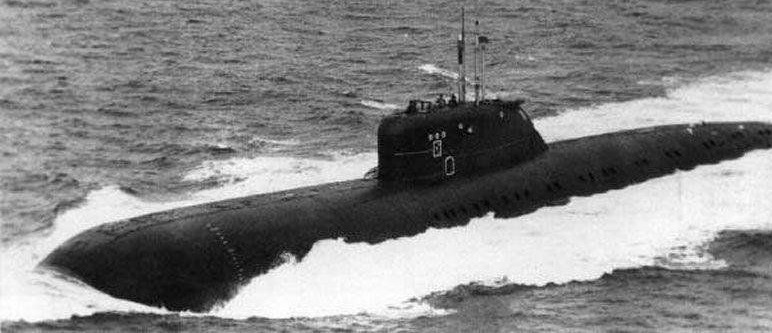
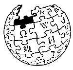
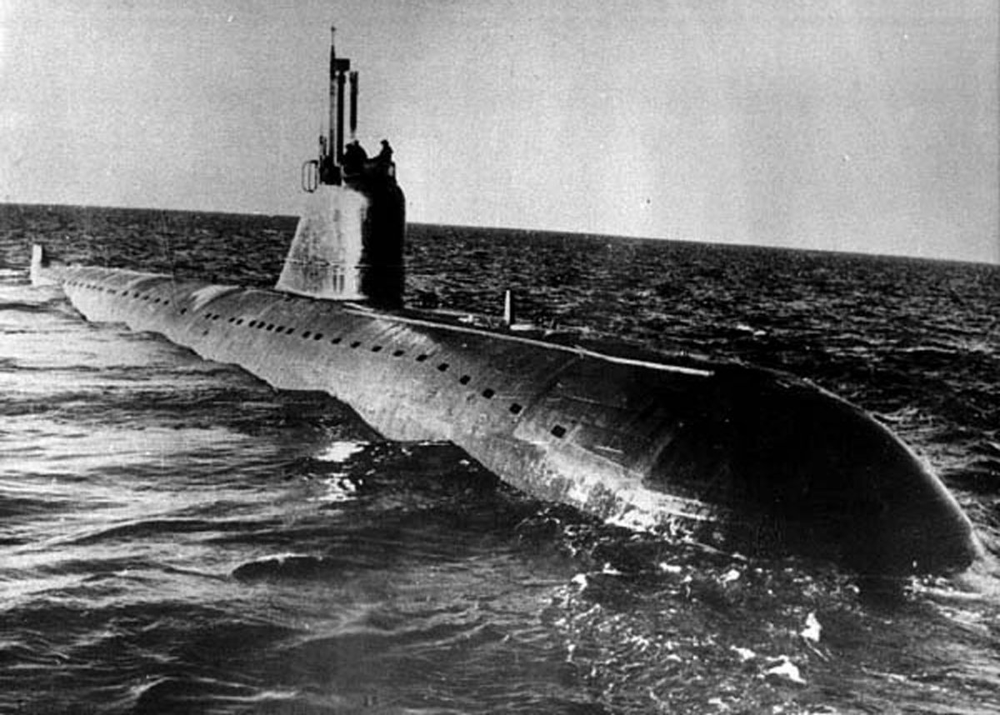
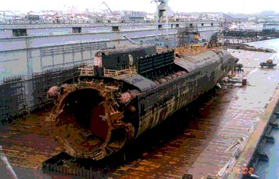
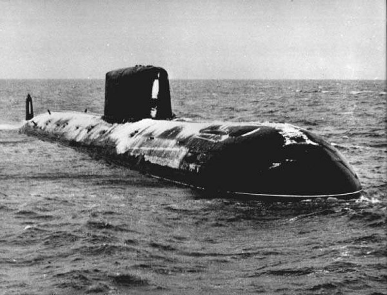
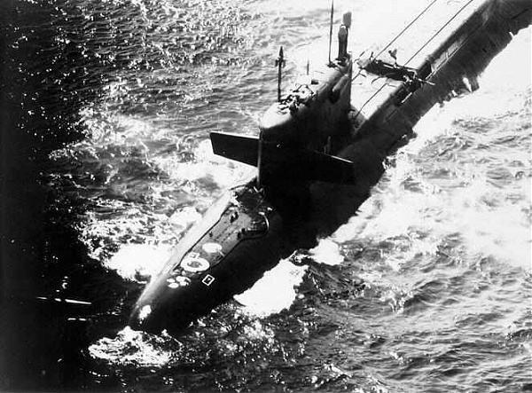
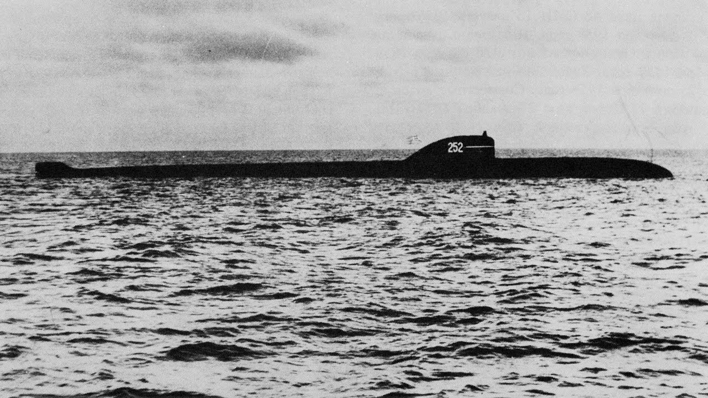
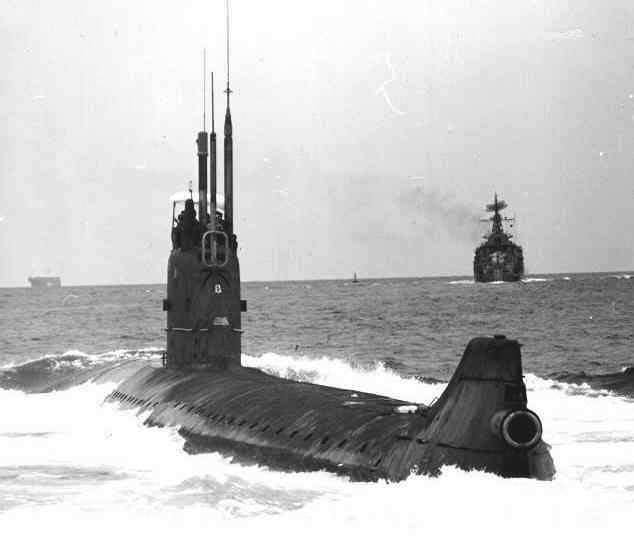
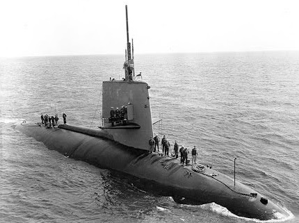
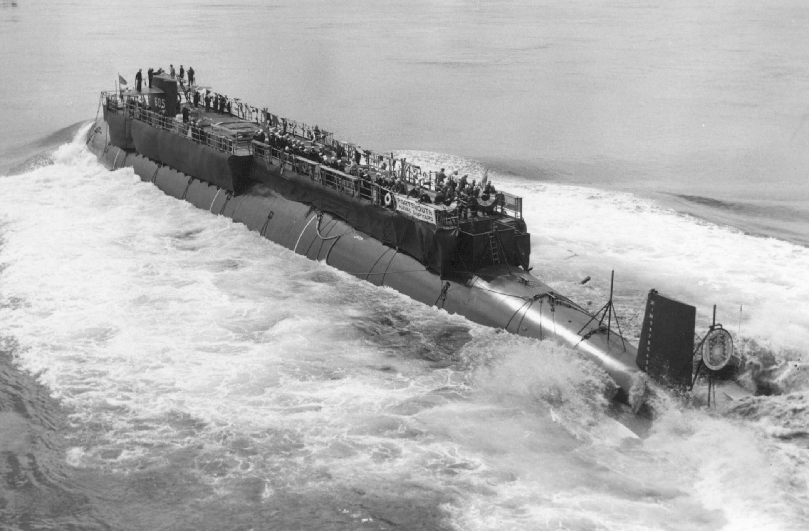

Soviet submarine K-429.
K-429 (often incorrectly referred to as K-329) was a nuclear submarine of the Soviet Navy. She was launched on 22 April 1972, and was commissioned on 31 October 1972 into the Soviet Pacific Fleet with a complement of 100 officers and men.

The Sinking Incident
In early 1983, K-429 returned to base needing overhaul after a long patrol. After turning their boat over to the shipyard, crew departed on leave. Her nuclear weapons remained aboard.
That June, Captain First Rank Nikolay Suvorov was ordered by Rear Admiral Oleg Yerofeyev, commander of the Pacific Fleet, to reassume command of K-429 and to take part in an exercise. Suvorov questioned the order: the exercises had been planned for later in the year, the boat was being repaired, the crew was on leave, and Suvorov expected a transfer to St. Petersburg. Yerofeyev explained that Suvorov's Communist Party membership would be revoked and he would have to face a tribunal if he asked such questions.
Suvorov recalled his crew and returned to K-429. Much of the crew could not be contacted, and their places were filled by sailors from the naval base and from five other boats that were in port at the time. Nearly one-third of the 120 crewmen had never been on K-429 before, and none of them received any training on K-429. On 23 June 1983, K-429 was ordered to proceed immediately to the torpedo firing range. Suvorov refused that order, replying that standard operating procedures required him to perform a test dive first.
Calamity Strikes
In the late evening on 23 June, K-429 arrived at her testing area in Sarannaya Bay, just south of Petropavlovsk-Kamchatsky, and Suvorov gave the order to dive to periscope depth. However, he had not given the preliminary command to set the diving watch — the crew neither aligned the boat's systems for sea, nor were they at their stations to control the boat during the dive.
Because the boat had not been prepared to dive, instrumentation valves were not aligned properly, and even though the main ballast tanks were filling, their indicators read empty. Confused, Suvorov ordered auxiliary ballast tanks filled. Over-ballasted to about 60 tons negative buoyancy, the boat dove very quickly.
While K-429 was in the shipyard, her ventilation system had been opened to the maximum extent possible, so as to exhaust fumes from welding. Various interlocks that would automatically shut ventilation valves were disabled. This lineup was not corrected before the boat dove.
The open ventilation system caused immediate catastrophic flooding of the forward compartments. Suvorov ordered an emergency ballast blow, but the operator became confused and shut the flood valves on the bottoms of the tanks, while opening the vents on the tops of the tanks. About half of the boat's supply of high-pressure air was wasted through the vents without displacing any water.
The forward compartments took on about 420 cubic meters (420 tons) of water before the ventilation system could be secured, killing 14 men immediately. At about midnight, the boat hit bottom, about 39 meters down. Although Suvorov had made mistakes that contributed to the sinking, his insistence on a test dive had saved the remaining men: the torpedo firing range was around 200 meters deep. If Suvorov had proceeded there directly, K-429 would have been lost.
Rescue
The boat's emergency buoys and escape capsules had been welded to the hull to prevent losing them at sea, so escape would require the crew to make a free ascent in Arctic waters. Suvorov assumed that his report that he would make a test dive had been received, and that the duty officer would give the alarm in about an hour when he failed to report re-surfacing. He ordered his crew to remain at their stations and await rescue, even though the boat's battery had begun releasing hydrogen.
Several hours later, during the morning of 25 June, Suvorov called for volunteers. Two of his original crew donned escape gear, locked out of the torpedo room escape trunk, and successfully ascended to the surface. They saw no ships in the area, so they swam to shore, where they were arrested by military police.
Their report reached Admiral Yerofeyev at about noon. By 19:15 that evening, the boat had been located, and the first sailor ascended to the waiting rescue ships at 22:36. During the rescue, two more seamen were lost during their ascent. The last seaman reached the surface at 23:00.
Aftermath
On 6 August K-429 was raised and towed into shallow water, and salvage began. It transpired that the reactor had shut down automatically, but that its control rods had jammed before reaching their full stroke and the reactor had been operating at about 0.5% power since the disaster. No radiation or contamination leakage was found. On 8 August, K-429 was raised into dry dock.
Suvorov was sentenced to ten years in prison. Likhovozov, chief of the fifth compartment, was sentenced for eight years. They were arrested in the barracks where the court took place, without letting them say good-bye to their wives. Suvorov told an interviewer, "I am not fully innocent. But a fair analysis should have been made to avoid such accidents in the future. I told the judges in my concluding statement: if you do not tell the truth, others do not learn from bad experiences — more accidents will happen, more people will die."
Admiral Yerofeyev was promoted to Commander-in-Chief of the Northern Fleet.
On 13 September 1985, K-429 sank at her moorings. She was again raised and decommissioned.
Reference:

Soviet submarine K-159
K-159 was a nuclear-powered submarine of the Soviet Northern Fleet. She was launched on 6 June 1963, and commissioned on 9 October 1963.

Radioactive discharge accident
On 2 March 1965, K-159 suffered an accident involving radioactive discharges into her steam generators, almost certainly primary coolant leaks from the tubes into the steam chest and thence into the turbines, contaminating her entire propulsion plant. If so, the leaking tubes were plugged, because she continued to operate for another two years before entering the shipyard from 1967 through 1968 for overhaul and to have her steam generators replaced. She returned to the shipyard from 1970 through 1972 for further repairs and refuelling, and then again from 1979 through 1980 for still more repairs.
K-159 was decommissioned on 30 May 1989 and laid up in Gremikha; her reactors were probably not defuelled. She remained in layup with little or no maintenance for 14 years. Her outer hull rusted until in many places it had "the strength of foil".
Because K-159's hull was rusted through in so many places, it was kept afloat by spot-welding large empty tanks to her sides as pontoons. Those tanks, however, were manufactured in the 1940s, were not air-tight, and were no better maintained than the submarine's hull.
Foundering and sinking
On 28 August 2003, K-159 and her pontoons were manned by ten Russian sailors and taken under tow to Polyarny. That crew kept the pontoons pressurized and the submarine hull pumped out, but during the early morning hours of 30 August they encountered a squall that ripped away one of the pontoons. K-159 did not sink immediately, but was clearly in distress. Northern Fleet was notified at 0120, and Admiral Suchkov arrived at headquarters 20 minutes later. By 0300 the wreck had sunk in the Barents Sea, 200 meters down, with nine of her crew and most likely 800 kilograms of spent nuclear fuel containing some 5300 terabecquerels of radionuclides.
The Russian government is considering plans to raise the wreck of K-159. Admiral Kuroyedov believes that "we should not leave nuclear objects lying on the seabed". Initial plans were to do so in August or September 2004, but they were postponed. In 2007, the British Ministry of Defence began preparations for a salvage operation. As part of that recovery planning, the Scottish company Adus was hired to evaluate the wreck. A high-resolution sonar generated image of K-159 was published on 1 April 2010. Further plans have yet to develop, and the vessel remains on the sea floor.
Reference:
Russian submarine K-141
K-141 Kursk was an Oscar-II class nuclear-powered cruise-missile submarine of the Russian Navy. The highest achievement of Soviet nuclear submarine technology. They were the second-largest attack submarines ever built, She was 154m long. The senior officers had individual staterooms and the entire crew had access to a gymnasium.
Kursk was part of Russia's Northern Fleet, which had suffered funding cutbacks throughout the 1990s. Many of its submarines were anchored and rusting in Zapadnaya Litsa Naval Base. Little work to maintain all but the most essential front-line equipment, including search and rescue equipment, had occurred. Northern Fleet sailors had gone unpaid in the mid-1990s.
On 12 August 2000, K-141 Kursk was lost in the Kursk submarine disaster when it sank in the Barents Sea, killing all 118 personnel on board.

Naval Exercise and Disaster
Kursk joined the "Summer-X" exercise, the first large-scale naval exercise planned by the Russian Navy in more than a decade, on 10 August 2000. This was depite that during her five years of service Kursk completed only one mission due to a lack of funds for fuel. As a result, many of her crew had spent little time at sea and were inexperienced.
Explosion
Three days into the exercise Kursk prepared to fire dummy torpedoes at the Kirov-class battlecruiser Pyotr Velikiy (Peter The Great). These practice torpedoes had no explosive warheads and were manufactured and tested at a much lower quality standard. On 12 August 2000 there was an explosion while preparing to fire. The Russian Navy's final report on the disaster concluded the explosion was due to the failure of one of Kursk's hydrogen peroxide-fueled Type 65 torpedoes. A subsequent investigation concluded that HTP, a form of highly concentrated hydrogen peroxide used as propellant for the torpedo, seeped through a faulty weld in the torpedo casing. When HTP comes in contact with a catalyst, it rapidly expands by a factor of 5000, generating vast quantities of steam and oxygen. The pressure produced by the expanding HTP ruptured the kerosene fuel tank in the torpedo and set off an explosion equal to 100–250 kilograms (220–550 lb) of TNT that was measured 4.2 on the Richter magnitude scale on seismographs across Europe and was detected as far away as Alaska.
The submarine sank in relatively shallow water, bottoming at 108 metres about 135km off Severomorsk. A second explosion 135 seconds after the initial event was equivalent to 3-7 tons of TNT. The explosions blew a large hole in the hull and collapsed the first three compartments of the sub, killing or incapacitating all but 23 of the 118 personnel on board.
Rescue Attempts
Kursk carried a potassium superoxide cartridge of a chemical oxygen generator, used to absorb carbon dioxide and chemically release oxygen during an emergency. However, the cartridge became contaminated with sea water and the resulting chemical reaction caused a flash fire which consumed the available oxygen. The investigation showed that some men temporarily survived the fire by plunging under water, as fire marks on the bulkheads indicated the water was at waist level at the time. Ultimately, the remaining crew burned to death or suffocated.
Russian President Vladimir Putin, though immediately informed of the tragedy, was told by the navy that they had the situation under control and rescue was imminent. He waited five days before he ended his holiday at a presidential resort in Sochi on the Black Sea.
Submarine recovery
A consortium formed by the Dutch companies Mammoet and Smit International was awarded a contract by Russia to raise the vessel, excluding the bow. They modified the barge Giant 4 which raised Kursk and recovered the remains of the sailors.
During salvage in 2001, the team first cut the bow off the hull using a tungsten carbide-studded cable. As this tool had the potential to cause sparks which could ignite remaining pockets of volatile gases, such as hydrogen, the operation was carefully executed. Most of the bow was abandoned and the balance of the vessel was towed to Severomorsk and placed in a floating dry dock for forensic analysis.
The remains of Kursk's reactor compartment was towed to Sayda Bay on Russia's northern Kola Peninsula – where more than 50 reactor compartments were afloat at pier points – after a shipyard had defuelled the boat in early 2003.
Some torpedo and torpedo tube fragments from the bow were recovered and the balance was destroyed by explosives in 2002.
Reference:
Soviet submarine K-278
K-278 Komsomolets was the only Project 685 Plavnik nuclear-powered attack submarine of the Soviet Navy. K-278 was launched on 3 June 1983 and commissioned on 28 December 1983.
The boat sank in 1989 and is currently resting on the floor of the Barents Sea, one mile deep, with its nuclear reactor and two nuclear warheads still on board. The single Project 685 was developed to test technologies for Soviet 4th generation nuclear submarines. Although primarily intended as a developmental model, it was fully combat capable, but sank after a fire broke out in the aft engineering compartment on its first operational patrol.
The Komsomolets was able to surface after the fire started and remained afloat for approximately 5 hours before sinking. Of the 42 crewmembers who died, only 4 were killed by the fire and smoke, while 34 died of hypothermia and drowning in the frigid waters while awaiting rescue that did not arrive in time.

Sinking
On 7 April 1989, while under the command of Captain 1st Rank Evgeny Vanin and running submerged at a depth of 335 metres about 180 kilometres southwest of Bear Island (Norway), fire broke out in the engine room due to a short-circuit, and even though watertight doors were shut, the resulting fire spread through bulkhead cable penetrations. The reactor scrammed and propulsion was lost. Electrical problems spread as cables burned through, and control of the boat was threatened. An emergency ballast tank blow was performed and the submarine surfaced eleven minutes after the fire began. Distress calls were made, and most of the crew abandoned ship.
The fire continued to burn, fed by the compressed air system. At 15:15, several hours after the boat surfaced, it sank in 1,680 metres of water, about 250 kilometres SSW off Bear Island. The commanding officer and four others who were still on board entered the escape capsule and ejected it. Only one of the five to reach the surface was able to leave the capsule and survive before it sank again in the rough seas.
Rescue aircraft arrived quickly and dropped small rafts, but many men had already died from hypothermia in the 2°C water of the Barents Sea. The floating fish factory B-64/10 Aleksey Khlobystov (Алексей Хлобыстов) arrived 81 minutes after K-278 sank, and took aboard 25 survivors and 5 fatalities. In total, 42 of the 69 crewmen died in the accident, including the commanding officer.
Aftermath
In addition to her eight standard torpedoes K-278 was carrying two torpedoes armed with nuclear warheads. Under pressure from Norway, the Soviet Union used deep sea submersibles operated from the oceanographic research ship Akademik Mstislav Keldysh to search for K-278. In June 1989, two months after the sinking, the wreck was located. Soviet officials stated that any possible leaks were insignificant and pose no threat to the environment.
Examination of the wreck in May 1992 revealed cracks along the entire length of the titanium hull, some of which were of 30–40 centimetres wide, as well as possible breaches in the reactor coolant pipes. An oceanographic survey of the area in August 1993 did suggest that waters at the site were not mixing vertically, and thus the sea life in the area was not being rapidly contaminated. That survey also revealed a hole over six metres wide in the forward torpedo compartment.
An expedition in mid-1994 revealed some plutonium leakage from one of the two nuclear torpedoes. On 24 June 1995, Keldysh set out again from St. Petersburg to the Mike datum to seal the hull fractures in Compartment 1 and cover the nuclear warheads, and declared success at the end of subsequent expedition in July 1996. The Russian government has declared the risk of radioactive contamination of the environment negligible until 2015 or 2025.
Norwegian authorities from the Marine Environmental Agency and Radiation Agency took several samples in August 2008 and no radiation was found. They checked for different radioactive substances including gamma emitters, plutonium, americium and strontium.
In 1993, Vice Admiral (ret.) Chernov, commander of the submarine group of which the Komsomolets was part, founded the Komsomolets Nuclear Submarine Memorial Society, a charity to support the widows and orphans of his former command. Since then, the Society's charter has expanded to provide assistance to the families of all Soviet and Russian submariners lost at sea. Also, 7 April has become a day of commemoration for all submariners lost at sea.
Reference:
Soviet submarine K-219
K-219 was a Project 667A Navaga-class ballistic missile submarine launched on 8 October 1971. She carried 15 SS-N-6 liquid-fuel missile, equipped with an estimated 34 nuclear warheads. The detonation that caused the sinking completely destroyed the missile inside silo 6, ejecting its warheads into the Atlantic, and the remaining 33 warheads were found missing after a Soviet hydrographic research ship found the wreck in 1988.
Mysteriously a number of the silos were found having been forced open by the inspection, as this happened after the vessel sank in 6000m of water it likely points to a successful recovery effort by an unknown actor.

Preamble
On Friday 3 October 1986, while on an otherwise routine Cold War nuclear deterrence patrol in the North Atlantic 1,090 km northeast of Bermuda, the 15-year-old K-219 suffered an explosion and fire in a missile tube. The seal in a missile hatch cover failed, allowing saltwater to leak into the missile tube and react with residue from the missile's liquid fuel. Though there was no official announcement, a published source (citing no sources) said the Soviet Union claimed that the leak was caused by a collision with the submarine USS Augusta.
Augusta was certainly operating in proximity, but both the United States Navy and the commander of K-219, Captain Second Rank Igor Britanov, deny that a collision took place. K-219 had previously experienced a similar casualty; one of her missile tubes was already disabled and welded shut, having been permanently sealed after an explosion caused by reaction between seawater leaking into the silo and missile fuel residue.
Event
Shortly after 0530 Moscow time, seawater leaking into silo six of K-219 reacted with missile fuel, producing chlorine and nitrogen dioxide gases and sufficient heat to explosively decompose additional fuming nitric acid to produce more nitrogen dioxide gas. K-219 weapons officer Alexander Petrachkov attempted to cope with this by disengaging the hatch cover and venting the missile tube to the sea. Shortly after 0532, an explosion occurred in silo six. The remains of the RSM-25 rocket and its two warheads were ejected from silo six into the sea.
An article in Undersea warfare by Captain First Rank (Ret.) Igor Kurdin, Russian Navy - K-219's XO (executive officer) at the time of the incident - and Lieutenant Commander Wayne Grasdock, USN described the explosion occurrence as follows:
At 0514, the BCh-2 officer and the hold machinist/engineer in compartment IV (the forward missile compartment) discovered water dripping from under the plug of missile tube No. 6 (the third tube from the bow on the port side). During precompression of the plug, the drips turned into a stream. The BCh-2 officer reported water in missile tube No. 6, and at 0525, the captain ordered an ascent to a safe depth (46 meters) while a pump was started in an attempt to dry out missile tube No. 6. At 0532, brown clouds of oxidant began issuing from under the missile-tube plug, and the BCh-2 officer declared an accident alert in the compartment and reported the situation to the GKP (main control post). Although personnel assigned to other compartments left the space, nine people remained in compartment IV. The captain declared an accident alert. It took the crew no more than one minute to carry out initial damage control measures, which included hermetically sealing all compartments. Five minutes later, at 0538, an explosion occurred in missile tube No. 6.
Two sailors were killed outright in the explosion, and a third died soon afterwards from toxic gas poisoning. Through a breach in the hull, the vessel immediately started taking on sea water, quickly sinking from its original depth of 40 metres to eventually reach a depth in excess of 300 metres. Sealing of all of the compartments and full engagement of the sea water pumps in the stricken compartments enabled the depth to be stabilised.
25 sailors were trapped in a sealed section, and it was only after a conference with his incident specialists that the Captain allowed the Chief Engineer to open the hatch and save the 25 lives. It could be seen from instruments that although the nuclear reactor should have automatically shut down, it was not. Twenty-year-old enlisted seaman Sergei Preminin volunteered to shut down the reactor, to be enabled by operating under instruction from the Chief Engineer. Working with a full-face gas mask, he successfully shut down the reactor. A large fire had developed within the compartment, raising the pressure. When Preminin tried to reach his comrades on the other side of a door, the pressure difference prevented him from opening it, and he subsequently died of asphyxiation in the reactor compartment.
In a nuclear safe condition, and with sufficient stability to allow it to surface, Captain Britanov surfaced K-219 on battery power alone. He was then ordered to have the ship towed by a Soviet freighter back to her home port of Gadzhievo, 7,000 kilometres away. Although a towline was attached, towing attempts were unsuccessful, and after subsequent poison gas leaks into the final aft compartments and against orders, Britanov ordered the crew to evacuate onto the towing ship, but remained aboard K-219 himself.
Displeased with Britanov's inability to repair his submarine and continue his patrol, Moscow ordered Valery Pshenichny, K-219’s security officer, to assume command, transfer the surviving crew back to the submarine, and return to duty. Before those orders could be carried out the flooding reached a point beyond recovery and on 6 October 1986 the K-219 sank to the bottom of the Hatteras Abyssal Plain at a depth of about 6,000m. Britanov abandoned ship shortly before the sinking. K-219's full complement of nuclear weapons was lost along with the vessel.
In 1988, the Soviet hydrographic research ship Keldysh positioned itself over the wreck of K-219, and found the submarine sitting upright on the sandy bottom. It had broken in two, aft of the conning tower. Several missile silo hatches had been forced open, and the missiles, along with the nuclear warheads they contained, were gone.
Preminin was posthumously awarded the Order of the Red Star for his bravery in securing the reactors. Britanov was charged with negligence, sabotage, and treason. He was never imprisoned, but waited for his trial in Sverdlovsk. On 30 May 1987, Defense Minister Sergey Sokolov was dismissed as a result of the Mathias Rust incident two days earlier, and replaced by Dmitry Yazov; the charges against Britanov were subsequently dismissed.
Reference:
Soviet submarine K-8
K-8 was a November-class submarine of the Soviet Northern Fleet that sank in the Bay of Biscay with its nuclear weapons on board on April 12, 1970. A fire on April 8 had disabled the submarine and it was being towed in rough seas. Fifty-two crewmen were killed attempting the salvage of the boat when it sank.

1960 loss of coolant
On 13 October 1960, while operating in the Barents Sea, K-8 suffered a ruptured steam generator tube, causing a loss-of-coolant accident. While the crew jury-rigged a system to supply emergency cooling water to the reactor, preventing a reactor core meltdown, large amounts of radioactive gas leaked out which contaminated the entire vessel. The gas radiation levels could not be determined because instrumentation could not measure such large scales. Three of the crew suffered visible radiation injuries, and many crewmen were exposed to doses of up to 180–200 'Roentgen Equivalent Man' (REM) which would result in mild radiation sickness within a few hours: vomiting, diarrhea, fatigue; reduction in resistance to infection.
1970 Bay of Biscay fire
During the large-scale "Ocean-70" naval exercise, K-8 suffered fires in two compartments simultaneously on 8 April 1970. Due to short circuits that took place in III and VII compartments simultaneously at a depth of 120 metres, a fire spread through the air-conditioning system. Both nuclear reactors were shut down.
The captain ordered his entire crew to abandon ship but was countermanded once a towing vessel arrived. Fifty-two crewmen, including the commander, Captain 2nd Rank Vsevolod Borisovich Bessonov, re-boarded the surfaced submarine that was to be towed. This was the first loss of a Soviet nuclear-powered submarine, which sank in rough seas as it was being towed in the Bay of Biscay of the North Atlantic Ocean. Eight mariners had already died due to certain compartments being locked to prevent further flooding as well as the spread of the fire as soon as it was detected. All hands on board died due to CO2 poisoning and the flooding of the surfaced submarine during 80 hours of damage control in stormy conditions. Seventy-three crewmen survived. K-8 sank with four nuclear torpedoes out of total 24 on board to a depth of 4,680 metres approximately 490 kilometres northwest of Spain.
Reference:
Soviet submarine K-27
K-27 was Launched on 1 April 1962, the only submarine of Project 645 in the Soviet Navy. It incorporated a pair of experimental VT-1 nuclear reactors that used a liquid-metal coolant (Lead-bismuth eutectic).

Marred Operations
The nuclear reactors of K-27 were troublesome from their first criticality, but the K-27 was able to engage in test operations for about five years. On 24 May 1968, the power output of one of its reactors suddenly dropped sharply; radioactive gases were released into its engine room; and the radiation levels throughout K-27 increased dangerously.
The training of the crew by the Soviet Navy had been inadequate, and these sailors did not recognize that their nuclear reactor had suffered from extensive fuel element failures. By the time they gave up their attempts to repair the reactor at sea, nine of the crewmen had accumulated fatal radioactive exposures.
K-27 was laid up in Gremikha Bay starting on 20 June 1968. The cooling-off of the reactors and various experimental projects were carried out aboard the submarine through 1973. These included the successful restarting of the starboard reactor up to 40% of maximal power production. Plans were considered to slice off the reactor compartment and replace it with a new one containing standard VM-A water-cooled reactors. The rebuilding or replacement of the nuclear reactor was considered to be too expensive, and also to be inappropriate because more modern nuclear submarines had already entered service in the Soviet Navy.
Scuttled in the Kara Sea
K-27 was officially decommissioned on 1 February 1979[1] and its reactor compartment was filled with a special solidifying mixture of furfuryl alcohol and bitumen during the summer of 1981 to seal the compartment to avoid pollution of the ocean with radioactive products.
Then K-27 was towed to a special training area in the eastern Kara Sea, and it was scuttled on 6 September 1982 off the northeastern coast of Novaya Zemlya in a fjord at a depth of just 33 meters. It was necessary for a naval salvage tug to ram the stern of K-27 to pierce its aft ballast tanks and sink it, because K-27's bow had impacted the seafloor while its stern was still afloat. This scuttling was performed contrary to the International Atomic Energy Agency's requirement that nuclear-powered submarines and surface ships must be scuttled at depths not less than 3,000 meters.
The last scientific expedition of the "Russian Ministry of Emergencies" to the Kara Sea examined the site of the scuttling in September 2006. Numerous samples of the seawater, the seafloor, and the sealife were gathered and then analyzed. The final report stated that the radiation levels of the area were stable.
Recovery plans
n September 2012 it was reported that the submarine needed to be lifted from its shallow bed in the Kara Sea. The vessel was said to be a "nuclear time bomb", and that the rusting and decaying vessel may be reaching a critical level leading to an "uncontrolled chain reaction". Although a joint Russian and Norwegian mission in 2012 did not find alarming levels of radioactivity in the water and soil surrounding the submarine, an urgent consideration pertains to the dismantling of the nuclear reactors should the submarine be raised. Because the reactors were cooled by liquid metals, the nuclear rods became fused with the coolant when the reactors were stopped and conventional methods cannot be used for disassembling the reactors. However, France's Commissariat à l'énergie atomique et aux énergies alternatives designed and donated special equipment for a dedicated dry-dock (SD-10) in Gremikha, which was used to dismantle the Alfa-class submarines that shared this design feature. However, since the last Alfa reactor was dismantled in 2011, this equipment is at risk.
In 2017, plans were again mooted to raise the submarine, by 2022. The Krylov State Research Center of St Petersburg announced that it was working on plans for a catamaran floating dock, capable of such heavy lifts from the seabed.
Reference:
USS Scorpion (SSN-589)
USS Scorpion (SSN-589) was a Skipjack-class nuclear submarine of the United States Navy and the sixth vessel of the U.S. Navy to carry that name. Scorpion was lost on 22 May 1968, with 99 crewmen dying in the incident. USS Scorpion is one of two nuclear submarines the U.S. Navy has lost, the other being USS Thresher.
It was one of four mysterious submarine disappearances in 1968, the others being the Israeli submarine INS Dakar, the French submarine Minerve and the Soviet submarine K-129.

Disappearance: May 1968
For an unusually long period, beginning shortly before midnight on 20 May and ending after midnight 21 May, Scorpion attempted to send radio traffic to Naval Station Rota, but was only able to reach a Navy communications station in Nea Makri, Greece, which forwarded Scorpion's messages to ComSubLant. Lt. John Roberts was handed Commander Slattery's last message, that he was closing on the Soviet submarine and research group, running at a steady 15 knots at 107m "to begin surveillance of the Soviets". Six days later the media reported she was overdue at Norfolk.
Search
The Navy suspected possible failure and launched a public search. Scorpion and her crew were declared "presumed lost" on 5 June. Her name was struck from the Naval Vessel Register on 30 June. The public search continued with a team of mathematical consultants led by Dr. John Piña Craven, the Chief Scientist of the U.S. Navy's Special Projects Division. They employed the methods of Bayesian search theory, initially developed during the search for a hydrogen bomb lost off the coast of Palomares, Spain, in January 1966 in the Palomares B-52 crash.
At the end of October 1968, the Navy's oceanographic research ship, Mizar, located sections of the hull of Scorpion on the seabed, about 740km southwest of the Azores, under more than 3,000m of water. This was after the Navy had released sound tapes from its underwater "SOSUS" listening system, which contained the sounds of the destruction of Scorpion. The court of inquiry was subsequently reconvened and other vessels, including the bathyscaphe Trieste II, were dispatched to the scene, collecting many pictures and other data.
Although Craven received much credit for locating the wreckage of Scorpion, Gordon Hamilton, an acoustics expert who pioneered the use of hydroacoustics to pinpoint Polaris missile splashdown locations, was instrumental in defining a compact "search box" wherein the wreck was ultimately found. Hamilton had established a listening station in the Canary Islands that obtained a clear signal of what some scientists believe was the noise of the vessel's pressure hull imploding as she passed crush depth.
Observed Damage
The bow of Scorpion skidded upon impact with the globigerina ooze on the sea floor, digging a sizable trench. The secondary Navy investigation — using extensive photographic, video, and eyewitness inspections of the wreckage in 1969 — offered the opinion that Scorpion's hull was crushed by implosion forces as it sank below crush depth. The Structural Analysis Group, which included Naval Ship Systems Command's Submarine Structures director Peter Palermo, plainly saw that the torpedo room was intact, though it had been pinched by excessive sea pressure.
The ship was broken in two by massive hydrostatic pressure at an estimated depth of 1530 feet. The operations compartment was largely obliterated by sea pressure and the engine room had telescoped 50 ft (15 m) forward into the hull due to collapse pressure, when the cone-to-cylinder transition junction failed between the auxiliary machine space and the engine room.
Navy investigations
The Naval Ordnance Laboratory (NOL) assembled a team of physicists with expertise on undersea explosions, their sound signatures, and their destructive effects. The investigation based much of its findings on an extensive acoustic analysis, providing a highly debated explanation as to how Scorpion may have reached its crush depth. A questionable method of anecdotally referring to the near-loss incident of the Diesel submarine Chopper in January 1969, when a power problem caused her to sink almost to crush depth, before surfacing.
The results of the U.S. Navy's various investigations into the loss of Scorpion are inconclusive. While the court of inquiry never endorsed Dr. Craven's torpedo theory regarding the loss of Scorpion, its "findings of facts" released in 1993 carried Craven's torpedo theory at the head of a list of possible causes of Scorpion's loss.
The first cataclysmic event was of such magnitude that the only possible conclusion is that a cataclysmic event (explosion) occurred resulting in uncontrolled flooding (most likely the forward compartments).
Reference:
USS Thresher (SSN-593)
The second USS Thresher (SSN-593) was the lead boat of her class of nuclear-powered attack submarines in the United States Navy. At the time it was built, Thresher was the fastest (matching the smaller, contemporary Skipjack class) and quietest submarine in the world. SSN 593 was considered the most advanced weapons system of its day, created specifically to seek out and destroy Soviet submarines.
On 10 April 1963, Thresher sank during deep-diving tests about 350 km east of Boston, Massachusetts, killing all 129 crew and shipyard personnel aboard. Her loss was a watershed for the U.S. Navy, leading to the implementation of a rigorous submarine safety program known as SUBSAFE. The first nuclear submarine lost at sea, Thresher (SSN-589) was also the first of only two submarines that killed more than 100 people aboard; the other was the Russian Kursk (K-141), which sank with 118 aboard in 2000.

Sinking
On 9 April 1963 Thresher, now commanded by Lieutenant Commander John Wesley Harvey, got underway from Portsmouth at 08:00 and rendezvoused with the submarine rescue ship Skylark at 11:00 to begin its initial post-overhaul dive trials, in an area some 350km east of Cape Cod, Massachusetts. That afternoon Thresher conducted an initial trim dive test, surfaced and then performed a second dive to half test depth. It remained submerged overnight and re-established underwater communications with Skylark at 06:30 on 10 April to commence deep-dive trials. Following standard practice, Thresher slowly dived deeper as it travelled in circles under Skylark—to remain within communications distance, pausing every additional 30m of depth to check the integrity of all systems.
As Thresher neared her test depth, Skylark received garbled communications over underwater telephone indicating "... minor difficulties, have positive up-angle, attempting to blow", and then a final even more garbled message that included the number "900". When Skylark received no further communication, surface observers gradually realized Thresher had sunk. By mid-afternoon a total of 15 Navy ships were en route to the search area. At 18:30, the Commander, Submarine Force Atlantic, sent word to Portsmouth Naval Shipyard to begin notifying next-of-kin—starting with Commander Harvey's wife, Irene Harvey—that Thresher was "missing."
By morning the next day all hope of finding Thresher was abandoned and at 10:30 the Chief of Naval Operations (CNO) went before the press corps at The Pentagon to announce that the submarine was lost with all hands. 35th President John F. Kennedy ordered all flags to be flown at half-staff on 12–15 April in honor of the 129 lost submariners and shipyard personnel.
Search and Recovery
An extensive underwater search using oceanographic ship Mizar and other ships mounted immediately and they soon found shattered remains of Thresher's hull located on the sea floor, some 2,600m below the surface, in six major sections.
Deep-sea photography, recovered artifacts, and an evaluation of her design and operational history permitted a Court of Inquiry to conclude Thresher had probably suffered the failure of a salt-water piping system joint which relied heavily on silver brazing instead of welding; earlier tests using ultrasound equipment found potential problems with about 14% of the tested brazed joints, most of which were determined not to pose a risk significant enough to require a repair. High-pressure water spraying from a broken pipe joint may have shorted out one of the many electrical panels, causing a shutdown ("scram") of the reactor, with a subsequent loss of propulsion. The inability to blow the ballast tanks was later attributed to excessive moisture in the submarine's high-pressure air flasks, moisture which froze and plugged the flasks' flowpaths while passing through the valves.
This was later simulated in dock-side tests on Thresher's sister sub, Tinosa. During a test to simulate blowing ballast at or near test depth, ice formed on strainers installed in valves; the flow of air lasted only a few seconds.[13] Air dryers were later retrofitted to the high-pressure air compressors, beginning with Tinosa, to permit the emergency blow system to operate properly.
Submarines typically rely on speed and deck angle (angle of attack) rather than deballasting to surface; they are propelled at an angle towards the surface. Ballast tanks were almost never blown at depth, and doing so could cause the submarine to rocket to the surface out of control. Normal procedure was to drive the submarine to periscope depth, raise the periscope to verify the area was clear, then blow the tanks and surface the submarine.
In a dockside simulation of flooding in the engine room, held before Thresher sailed, it took the watch in charge 20 minutes to isolate a simulated leak in the auxiliary seawater system. At test depth with the reactor shut down, Thresher would not have had 20 minutes to recover. Even after isolating a short-circuit in the reactor controls, it would have taken nearly 10 minutes to restart the plant.
Thresher likely imploded at a depth of 400–610m.
The U.S. Navy has periodically monitored the environmental conditions of the site since the sinking and has reported the results in an annual public report on environmental monitoring for U.S. Naval nuclear-powered craft. These reports provide specifics on the environmental sampling of sediment, water, and marine life which was done to ascertain whether Thresher's nuclear reactor has had a significant effect on the deep ocean environment. The monitoring data confirm that there has been no significant effect on the environment. Nuclear fuel in the submarine remains intact.
Titanic Connection
According to newly declassified information, the Navy sent Commander (Dr.) Robert Ballard, the oceanographer credited with locating the wreck of RMS Titanic, on a secret mission to map and collect visual data on both Thresher and Scorpion wrecks. The Navy used Ballard's search for Titanic as a screen to hide the mission. Ballard approached the Navy in 1982 for funding to find Titanic with his new deep-diving robot submersible. The Navy saw the opportunity and granted him the money on the condition he first inspect the two submarine wrecks. Ballard's robotic survey discovered that Thresher had sunk so deep that it imploded, turning into thousands of pieces. The only recoverable piece was a foot of marled pipe. His 1985 search for Scorpion revealed such a large debris field that it looked "as though it had been put through a shredding machine." Once the two wrecks had been visited, and the radioactive threat from both was established as small, Ballard was able to search for Titanic. Due to dwindling funds, he had just 12 days to do so, but he used the same debris-field search techniques he had used for the two submarines, which worked, and Titanic was found.
SUBSAFE Legacy
When the Court of Inquiry delivered its final report, it recommended that the Navy implement a more rigorous program of design review and safety inspections during construction. That program, launched in December 1963, was known as SUBSAFE. From 1915 to 1963, the U.S. Navy lost a total of 16 submarines to non-combat accidents. Since the inception of SUBSAFE only one submarine has suffered a similar fate, and that was USS Scorpion, which sank in 1968 for reasons still undetermined. Scorpion was not SUBSAFE certified.
Reference:
Text content for this webpage has been extracted from Wikipedia, other sources are listed in their associated sections. Click on the reference icons for source material.